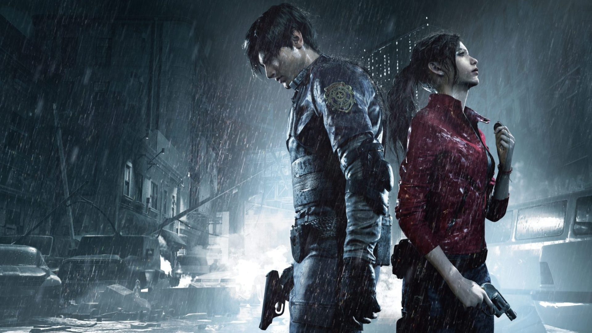
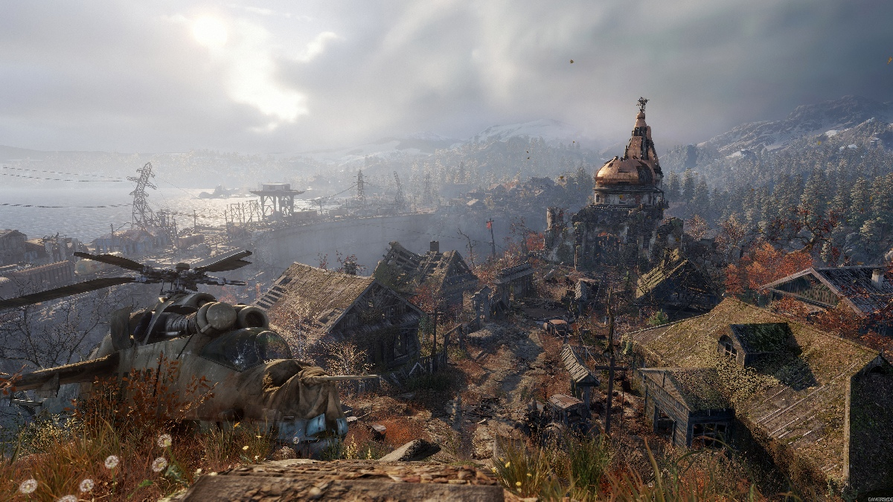
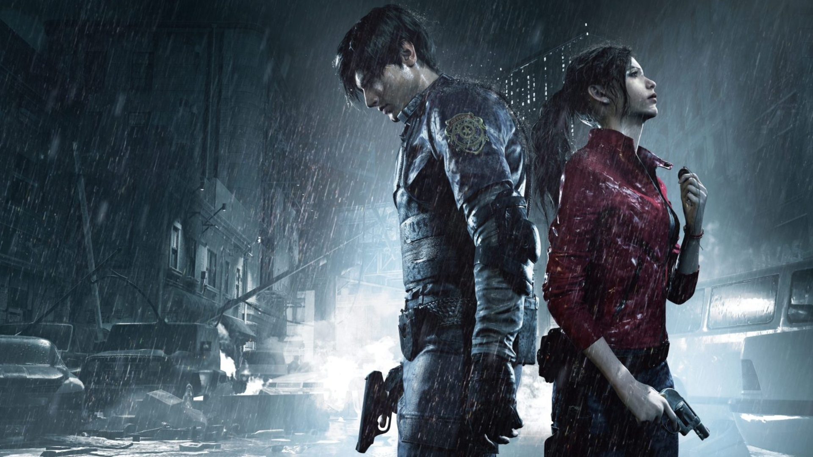
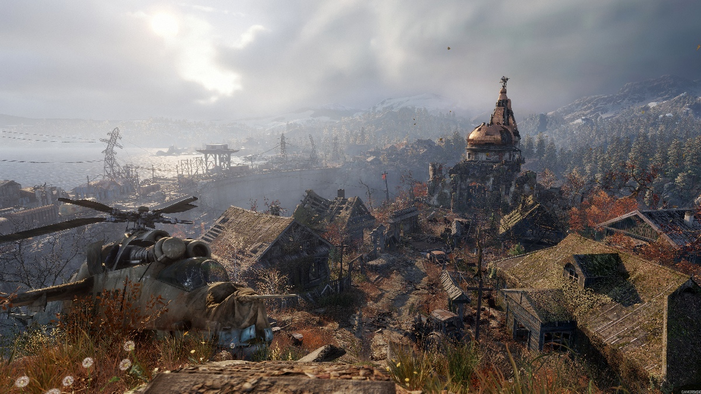

Nowosci
Resident Evil 2 Remake
Premiera: 25 stycznia 2019
Platformy: PC, PS4, Xbox One

Metro Exodus
Premiera: 15 lutego 2019
Platformy: PC, PS4, Xbox One

Premiera: 25 stycznia 2019
Platformy: PC, PS4, Xbox One

Premiera: 15 lutego 2019
Platformy: PC, PS4, Xbox One

Tryb gry: single player
Ocena gry 8,2 / 10 na podstawie 519 ocen czytelników.
Oczekiwania czytelników przed premierą gry: 6,8 / 10 na podstawie 1633 głosów czytelników
Źródło: https://www.gry-online.pl/
Ocena gry 8,2 / 10 na podstawie 519 ocen czytelników.
Oczekiwania czytelników przed premierą gry: 6,8 / 10 na podstawie 1633 głosów czytelników
Źródło: https://www.gry-online.pl/
Moda na remake'i nie ustaje, ale Resident Evil 2 wyznacza w tym kierunku nowe standardy.
Przemodelowano wszystkie elementy gry, zachowując jednak ducha oryginału,
dzięki czemu musimy chociażby dbać o rozłożenie zawartości ekwipunku.
Szykuje się jedna z najmocniejszych premier tego roku, a to dopiero początek.
Seria Metro to prawdziwy ewenement, bo deweloperom z 4A Games udało się przenieść doskonałą prozę Dmitrija Głuchowskiego na konsole i komputery,
dbając o odpowiedni klimat i przyjemną rozgrywkę. Exodus podwyższa poprzeczkę, zwiększając możliwości i oddając do dyspozycji półotwarte lokacje.